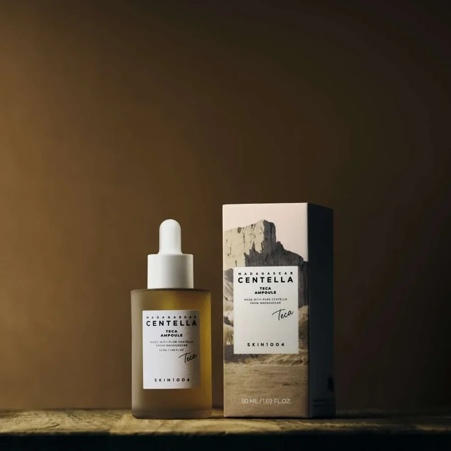
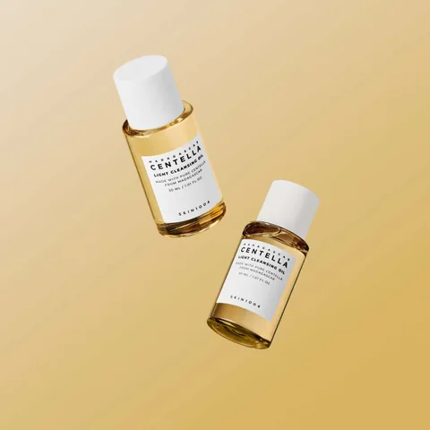
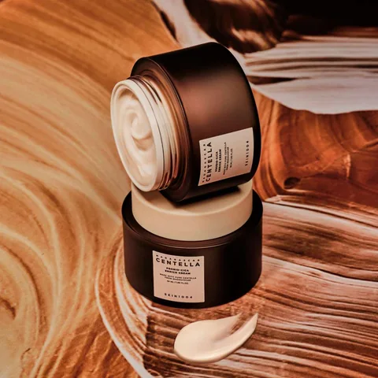
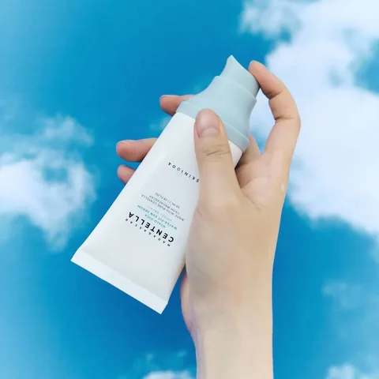
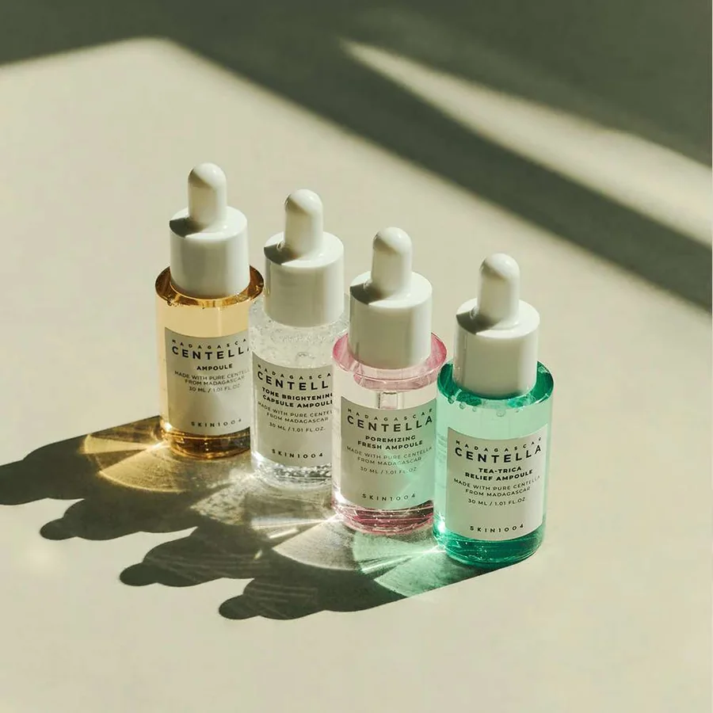
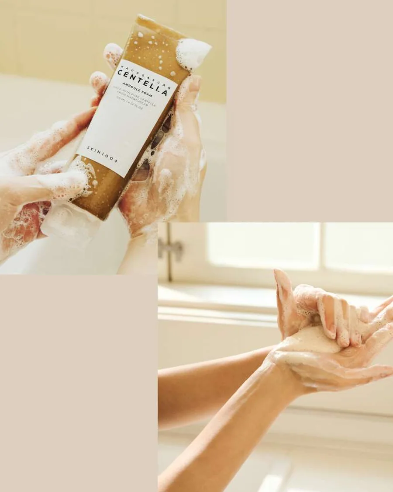
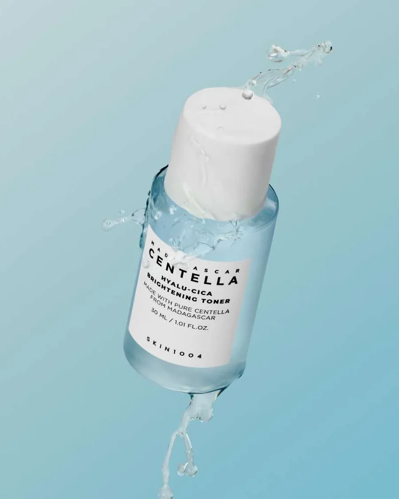
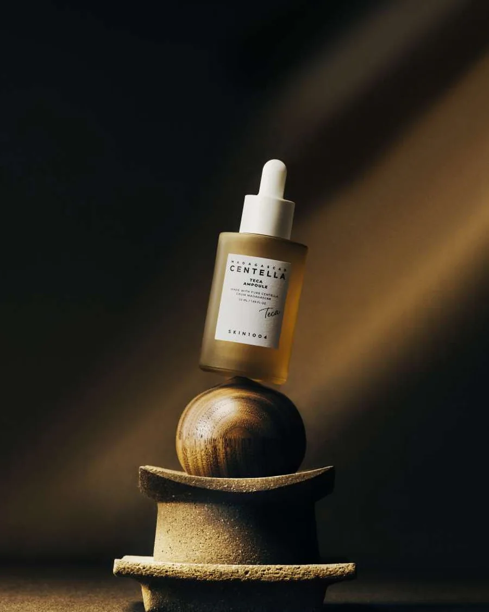
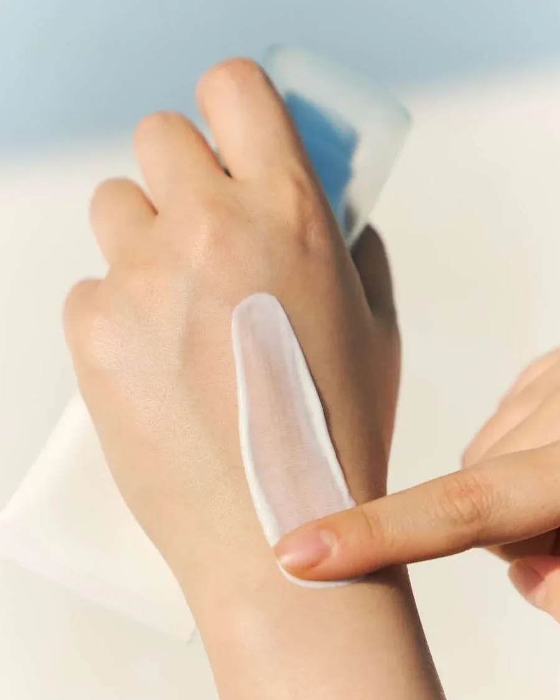

En qué orden aplicar tus productos
De la textura más ligera a la más densa: limpieza, tónico, sérum, crema y protector solar, y por qué empezar con pocos productos.
Ingredientes y advertencias visibles antes de comprar
Skincare coreano SKIN1004: limpieza, tónicos, sérums, cremas y protección solar, con ingredientes y registro INVIMA en cada ficha.
Cada ficha muestra ingredientes, presentación y advertencias antes de que pagues.
Carrito claro, totales visibles en todo momento y un checkout de pocos pasos.
Resolvemos dudas sobre pedidos y productos, sin reemplazar a tu profesional de la salud.
Te confirmamos el costo según tu ciudad antes de que pagues. Ver condiciones
Seis categorías de la línea Madagascar Centella, ordenadas como los pasos de una rutina.

Fórmulas concentradas con centella para calmar, equilibrar o iluminar.

Aceite y espuma para el primer paso.
Hidratan y preparan la piel.

Cremas, geles y mascarilla de noche.

SPF50+ PA++++ de textura ligera.

Varias referencias en una caja, para probar o regalar.
Los más consultados de la semana. Precios de referencia de noviembre de 2026.
De la textura más ligera a la más densa. Ideas generales, no recomendaciones personalizadas.

Una piel limpia recibe mejor todo lo que viene después. En la noche, el aceite retira maquillaje y protector solar; la espuma termina el trabajo.
Información general. Si tu piel tiene una condición, consulta con un dermatólogo.

El tónico devuelve la hidratación después de limpiar y deja la piel lista para el sérum.
Información general. Si tu piel tiene una condición, consulta con un dermatólogo.

Los sérums y ampollas son las fórmulas más concentradas de la rutina: calmar, equilibrar los poros o dar luminosidad.
Información general. Si tu piel tiene una condición, consulta con un dermatólogo.
La crema ayuda a mantener la hidratación durante el día; en la noche puede reemplazarse por una mascarilla de noche.
Información general. Si tu piel tiene una condición, consulta con un dermatólogo.

El protector solar es el paso que más cuida la piel a largo plazo. Va al final de la rutina de la mañana.
Información general. Si tu piel tiene una condición, consulta con un dermatólogo.
Cinco pasos, con la información a la vista en cada uno.
Filtra por categoría, precio o nombre en el catálogo.
Ingredientes, presentación y advertencias en cada ficha.
Elige la cantidad y guarda favoritos para decidir después.
Ajusta cantidades y mira el subtotal antes de seguir.
Elige envío y forma de pago con los costos visibles.
Testimonios de demostración del prototipo: no son opiniones de clientes reales.
«Me gustó poder leer los ingredientes completos antes de pagar. Sentí que nadie me estaba vendiendo milagros.»
«El carrito me mostró el total con el envío antes de confirmar. Así sí da gusto comprar en línea.»
«Pregunté por un producto para mi rosácea y me sugirieron consultarlo primero con mi dermatóloga. Esa honestidad me dio confianza.»
«El pedido llegó bien empacado y con los sellos intactos.»
«Me ayudaron a ordenar mi rutina: limpieza, tónico, sérum y crema, sin comprar de más.»
«La ficha del sérum explicaba la textura tal cual es: ligera y sin perfume.»
Artículos de demostración con información general sobre rutina facial, etiquetas y protección solar.
De la textura más ligera a la más densa: limpieza, tónico, sérum, crema y protector solar, y por qué empezar con pocos productos.
Respuestas cortas y honestas. Si tu duda es sobre una condición de tu piel, la persona indicada es un dermatólogo.
Ver todas las preguntasLos métodos y costos de envío aparecen en el checkout antes de confirmar y en la sección Envíos y devoluciones. Los valores actuales son de ejemplo.
La tienda muestra de forma ilustrativa tarjeta débito o crédito, PSE, efectivo y contraentrega. Este prototipo no procesa pagos ni pide datos de tarjetas: en una tienda real el pago se haría en una pasarela segura.
Desde la página de contacto o el botón de WhatsApp. En esta demostración los canales no están conectados a un equipo de atención y se indica en cada uno.